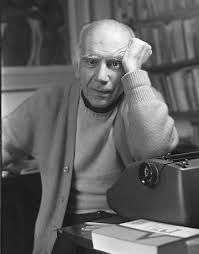

En el otoño de 1941, Erico Verissimo presencia la muerte de una "muchacha rubia, blanca y menuda" que se arrojó desde un edificio en el centro de Porto Alegre. El malestar por haber presenciado esta escena lo llevó a escribir El resto es silencio, que comienza precisamente con la caída de una niña desde lo alto de un pico en la capital de Rio Grande do Sul. La historia, contada desde diferentes perspectivas, se desarrolla en poco más de 24 horas, entre la tarde del Viernes Santo y la noche del Sábado Aleluya. El destino de la chica, que en la trama imaginada por el escritor es una simple vendedora de una gran revista, se revela como el punto de conexión entre las trayectorias de los diferentes personajes. En esta novela, considerada el puente artístico a la saga El tiempo y el viento, Erico alcanza no sólo el dominio en la técnica del contrapunto dramático -aprendida del novelista inglés Aldous Huxley- sino también la madurez en la composición de los personajes. El resultado es un texto denso y conmovedor, profundamente en sintonía con las preocupaciones sociales y estéticas del autor y con los oscuros signos del desastre que arrasaron el mundo tras la Segunda Guerra Mundial.